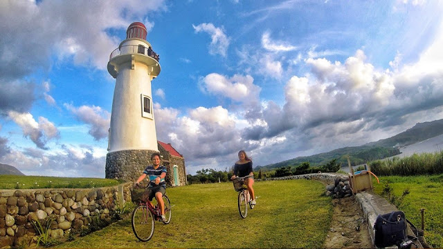

Batanes is one of those destinations where a weekend is not enough to be able to visit its
unique tourist spots. We highly recommend planning for 5 days and 4 nights trip to the Home of
the Winds. Here's a sample itinerary to help you maximize your visit.
Sample Itinerary
Day 1: Arrival + Basco
- 11:45 AM - ETA in Basco Airport, Batanes
- 12:30 PM - Check-in at a Basco Hotel, Relax
- 01:30 PM - Lunch
- 03:00 PM - Rent a bike or do a walking short tour of Basco
- 04:00 PM - Visit Mt. Carmel Church in Basco
- 06:00 PM - Dinner
Day 2: Sabtang Tour
- 05:30 AM - ETD to Ivana Port
- 06:30 AM - Board the faluwa for the Sabtang Island Tour
- 08:30 AM - Start of Sabtang Tour
- 12:00 NN - Lunch
- 01:00 PM - Resume Sabtang Tour
- 02:00 PM - Board the faluwa back to Ivana Port
- 03:00 PM - Arrival at Ivana Port
- 03:30 PM - Rent a bike. Visit Ivana Church and Honesty Coffee
Shop. - 05:00 PM - Watch the sunset while exploring Basco
- 06:00 PM - Dinner
Day 3: North Batan Tour
- 8:00 AM - Breakfast
- 9:00 AM - Bike or walk around town
- 11:30 AM - Lunch
- 1:00 PM - Start of North Batan Tour
- 5:00 PM - End of North Batan Tour
- 07:00 PM - Dinner
Day 4: South Batan Tour
- 07:00 AM - Breakfast
- 07:30 AM - Start of South Batan Tour
- 11:30 AM - Lunch
- 12:30 PM - Resume South Batan Tour
- 05:00 PM - End of tour. Last-minute shopping for souvenirs.
- 07:00 PM - Dinner
Day 5: Departure
- 07:00 AM - Breakfast
- 08:00 AM - Visit the souvenir shops
- 09:30 AM - Hotel checkout. Go to the airport.
- 10:30 AM - Board plane back to Manila
Best Time To Go There

The best time to visit Batanes is during the dry or summer season. In the Philippines, the months of March, April, May, and June are considered the hottest months with minimal rainfall. These are also the best months to visit Batanes. Fewer chances of rainfall mean fewer chances of delayed or canceled flights and you’ll be able to enjoy your trip better since Batanes tourist attractions are mostly outdoors.
Summer Season | March to June
For a hassle-free trip, it’s best to plan your Batanes adventure around the months of the dry and summer season in the Philippines. March to June has a minimal amount of rainfall.
But if you want to enjoy a “cooler” Batanes in terms of temperature, you can visit during the first quarter of the year. However, the weather can quickly change from sunny to cold and rainy.
Climate and Weather
Batanes has a tropical climate like the rest of the Philippines. The average yearly temperature is 26.0 °C. April is the driest month, while August is the rainiest month so best to avoid traveling to Batanes during that time. November to February are the coldest and often have rainy days as well.
How to Get There?
By Flights
The fastest and easiest way to reach Batanes is by air. Basco has an airport (Basco Airport) located in the town proper. Travel time is 70-110 minutes, depending on your choice of airline and departure. Fares to Basco are infamous for being expensive. Year-round fares can cost more than P10,000 per way if you book at the last minute. But there are ways to save more. Try booking a Tuesday or Wednesday flight instead of a weekend one if you’re on a budget and looking for less expensive plane tickets. Normally, flights during these days are less expensive. While promo fares to Batanes are very few, if you do chance upon some, it’s best to book ahead and enjoy the big savings. Here are some of the flight options from different parts of the Philippines:
From Luzon: Manila and Clark
If you’re in Metro Manila, flights to Basco will take 2 hours and 10 minutes. Cebgo and Sky Jet both offer direct flights once a day. If you’re coming from the northern part of Metro Manila or Luzon, the best option would be to fly out of Clark, Pampanga.
Not only do you skip the traffic in Metro Manila, but you also enjoy generally lower airfare. Philippine Airlines (PAL) flies twice daily from Clark, Pampanga straight to Basco, Batanes for 1 hour and 40 minutes.
From Cebu
If you’re coming from Cebu in Visayas, the Philippines’ Queen City of the South, there are two airlines offering daily flights to Batanes. PAL has two daily flights with one stopover in Clark, Pampanga for a total duration of 2 hours and 55 minutes while Cebgo has seven daily flights with one stopover in Manila for a total duration of 3 hours and 55 minutes.
From Davao
If you’re coming from Davao in Mindanao, the so-called Durian Capital of the Philippines, there are also two airlines offering daily flights to Batanes. PAL has two daily flights with one stopover in Clark, Pampanga for a total duration of 3 hours and 30 minutes while Cebgo has two daily flights with one stopover in Manila for a total duration of 4 hours and 10 minutes.